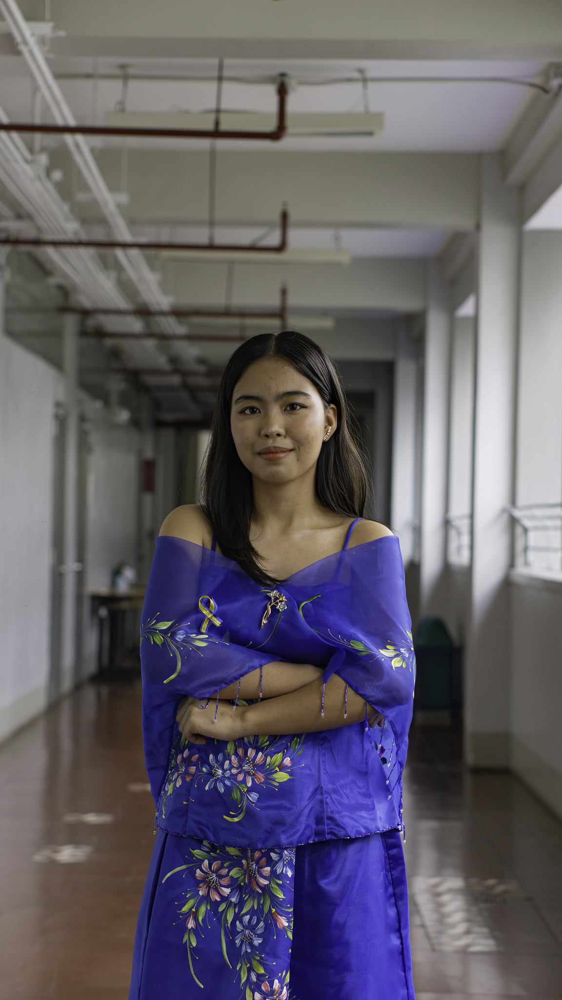

Marielle Johanna C. Glabo
Bachelor of Secondary Education Major in English
I'm a Campus Journalist Student, a Writer with four (4) years of experience in Fiat Lux, The Student-Run Publication of National Teachers College. I'm also an aspiring English Teacher who is studying Bachelor of Secondary Education Major in English at National Teachers College, Quiapo, Manila, Philippines.